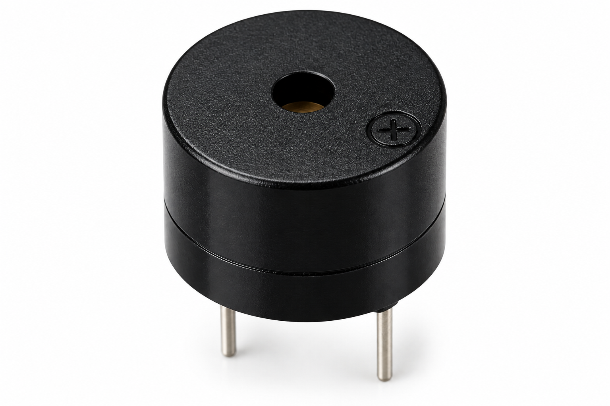

Aim
Detect vibration events with a bare SW-500D, show the count on a 0.96-inch SSD1306 OLED, sound a buzzer, and serve a live Wi-Fi dashboard.
About the Experiment
Detect vibration events with a bare SW-500D, show the count on a 0.96-inch SSD1306 OLED, sound a buzzer, and serve a live Wi-Fi dashboard.
Components Required
 ESP32-DevKitC ×1
ESP32-DevKitC ×1 SW-500D Bare Vibration Sensor ×1
SW-500D Bare Vibration Sensor ×1 0.96-inch SSD1306 OLED ×1
0.96-inch SSD1306 OLED ×1
Active Buzzer ×1 Breadboard ×1
Breadboard ×1 Jumper Wires
Jumper WiresCircuit Connections
| Component Pin | Connection |
|---|---|
| SW-500D terminal 1 | GND |
| SW-500D terminal 2 | GPIO 27 |
| OLED VCC | 3.3V |
| OLED GND | GND |
| OLED SDA | GPIO 21 |
| OLED SCL | GPIO 22 |
| Buzzer + | GPIO 25 |
| Buzzer − | GND |
Circuit Diagram

Working Principle
Procedure
- Arrange the components and verify their specifications.
- Make all connections exactly as listed in the table.
- Install the required ESP32 board package and libraries in Arduino IDE.
- Configure your local Wi-Fi credentials in the sketch without publishing them.
- Upload using the correct board selection and programmer.
- Open Serial Monitor at 115200 baud and observe the output.
- Test the sensor, display, camera or web dashboard as appropriate.
#include <WiFi.h> #include <WebServer.h> #include <Wire.h> #include <U8g2lib.h> const char* ssid = "YOUR_WIFI_NAME"; const char* password = "YOUR_WIFI_PASSWORD"; #define VIBRATION_PIN 27 #define BUZZER_PIN 25 WebServer server(80); U8G2_SSD1306_128X64_NONAME_F_HW_I2C oled(U8G2_R0, U8X8_PIN_NONE); unsigned long vibrationCount=0, lastDebounceTime=0, lastEventTime=0; const unsigned long debounceDelay=500; bool lastSensorState=HIGH; void updateOLED(){ oled.clearBuffer(); oled.setFont(u8g2_font_6x10_tr); oled.drawStr(0,12,"Vibration Events"); char buf[22]; snprintf(buf,sizeof(buf),"%lu",vibrationCount); oled.setFont(u8g2_font_helvB18_tr); oled.drawStr(0,44,buf); oled.sendBuffer(); } void alert(){digitalWrite(BUZZER_PIN,HIGH);delay(120);digitalWrite(BUZZER_PIN,LOW);} void handleRoot(){ server.send(200,"text/html",R"rawliteral(<!DOCTYPE html><html><meta name="viewport" content="width=device-width"><body style="font-family:Arial;text-align:center"><h2>Wi-Fi Vibration Event Counter</h2><h1 id="count">0</h1><p id="info"></p><button onclick="fetch('/reset').then(refresh)">Reset Counter</button><script>async function refresh(){let x=await(await fetch('/data')).json();document.getElementById('count').textContent=x.count;document.getElementById('info').textContent='Last event (ms): '+x.lastEvent+' | Uptime (ms): '+x.uptime}setInterval(refresh,1000);refresh();</script></body></html>)rawliteral"); } void setup(){ Serial.begin(115200); pinMode(VIBRATION_PIN,INPUT_PULLUP);pinMode(BUZZER_PIN,OUTPUT); digitalWrite(BUZZER_PIN,LOW); Wire.begin(21,22);oled.begin();updateOLED(); WiFi.begin(ssid,password); while(WiFi.status()!=WL_CONNECTED){delay(500);} Serial.println(WiFi.localIP()); server.on("/",handleRoot); server.on("/data",[]{server.send(200,"application/json",String("{\"count\":")+vibrationCount+",\"lastEvent\":"+lastEventTime+",\"uptime\":"+millis()+"}");}); server.on("/reset",[]{vibrationCount=0;updateOLED();server.send(200,"text/plain","Reset");}); server.begin(); } void loop(){ server.handleClient(); bool state=digitalRead(VIBRATION_PIN); if(state==LOW && lastSensorState==HIGH && millis()-lastDebounceTime>debounceDelay){ vibrationCount++;lastEventTime=millis();lastDebounceTime=millis(); Serial.printf("Vibration Event: %lu\n",vibrationCount); alert();updateOLED(); } lastSensorState=state; }
Click a line to highlight it and inspect the program step by step.
Check Your Understanding
Which pins carry the sensor or display signals? What output occurs when the experiment detects an event? What happens if Wi-Fi disconnects?
Expected Output
SW-500D detects vibration → ESP32 debounces event → Counter increases → OLED and dashboard update → Buzzer sounds.
Result
The experiment demonstrates the intended sensing, output, and IoT workflow when the connections and code are configured correctly.
What You Learn
Sensor interfacing, GPIO configuration, signal flow, Wi-Fi connectivity, event-driven programming and troubleshooting.